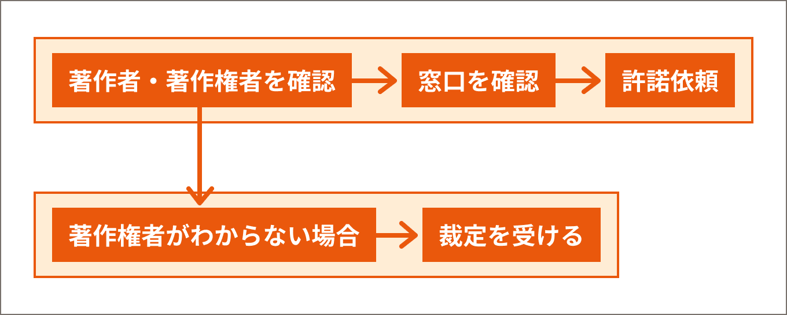

許諾を取る手順
「2章 section01 授業と著作物」でフロー図をお見せしました。その内容を改めて確認しましょう。
「許諾をとる or あきらめる」となった場合に、あきらめる時は第三者の著作物の部分を削除したり、代替物がないか探して差し替えたりする方法があります。
以下は「許諾をとる」を選んだ場合の説明になります。
Step1：著作者・著作権者が誰なのかを調べる

1つの教材の中で複数使用している場合には、教材ごとの出典リストを作成しておくことが望ましいです。


また、Webサイトから複製した場合は、それが孫引きでないかの注意も必要です。

その場合は、元のサイトを見て、著作者、著作権者がだれなのか、ライセンス元の表記があるのかなどを確認しないといけないですね。

Step2：窓口がないかを調べる
著作権の利用許諾については、窓口を設けているところが多数あります。
まず文化庁の「著作物の正しい利用方法」のページを見て、窓口がないか調べてみましょう。
例えば、音楽の著作権は集中管理団体であるJASRACやNexToneが管理している場合が多いのですが、そうでないこともあります。
そこで、まずはJASRACの作品ベータベース検索サービスで、利用したい楽曲があるか検索してみましょう。もしJASRACで検索して見つからない場合は、NexToneの作品検索データベースで調べてみましょう。
例えば、Official髭男dismの楽曲はデータベースで検索するとJASRACではなく、NexToneが管理していることがわかります。この場合はNexToneに許諾を申請することになります。
Step3：許諾依頼をする
窓口がある場合には、窓口から利用許諾申請をしましょう。窓口は、Webフォームになっているところも多いです。費用がかかることがあるので、料金は確認しましょう。JASRACやNexToneは使用料計算シミュレーションができます。
計算シミュレーションがない場合は、使用料規程を読んだり、見積もりをとったりして確認しましょう。
窓口がない場合は、著作者、著作権者に直接連絡して、許諾をとります【許諾のフロー】。

後で権利者と認識がずれてトラブルにならないよう、なるべく文書で記録に残るようにしておきましょう。最低限、以下のことを記載しておく必要があります。
- 利用する著作物
- 利用者
- 利用目的（具体的に）
-
利用方法（具体的に）
例：約100人が観客の文化祭で、入場料は取らないが、客演の俳優に報酬を支払う。あなたの小説を元にこちらで作成した脚本を使用したい。 - 利用の期間
- 利用の範囲：著作物の全部なのか、一部であればどの箇所なのか
- 対価：使用料がかかるのであれば金額と支払方法
教育利用の場合には、使用料が安かったり無料だったりすることもあるので、とりあえず問い合わせてみることをお勧めします。
Step4：著作権者がわからない場合
一生懸命調べたのだけれど、どうしても著作権者が誰なのかわからないこともあります。
著作権法では、文化庁長官の裁定を受け、かつ、補償金を払って、その著作物を利用できる規定（著作権者不明等の場合の裁定制度）があります（67条）。著作隣接権者が不明の場合も、同じく裁定制度の対象になっています。
著作権者不明の著作物を「オーファンワークス」と言います。権利者団体等で構成されたオーファンワークス実証事業実行委員会が、「著作権者不明等著作物裁定申請書作成ガイド」を公開しているので参照してください。
申請には、権利者捜し広告掲載費用（通常8,250円）と裁定申請手数料（通常6,900円）に加え、裁定補償金額が必要です。補償金の金額については、文化庁の裁定補償金金額シミュレーションシステムがありますので、参考にしてください。